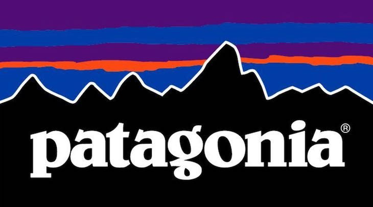

I brand sostenibili sono esemplari di imprese che adottano una produzione di abbigliamento ecologicamente responsabile. Queste aziende si distinguono per la loro dedizione alla creazione di prodotti di alta qualità seguendo principi di sostenibilità ambientale e responsabilità sociale. Ad esempio, Patagonia si impegna a ridurre l'impatto ambientale nella produzione dei suoi capi, privilegiando materiali sostenibili come fibre organiche e riciclate.
Oltre alla scelta dei materiali, i brand sostenibili si concentrano sulla riduzione dell'impatto ambientale attraverso tecnologie a basse emissioni di carbonio, ottimizzazione dell'uso dell'acqua e promozione dell'economia circolare. Un punto focale è anche la giustizia sociale, garantendo condizioni di lavoro dignitose e promuovendo pratiche etiche. Questi brand educano i consumatori su temi ambientali e sociali, promuovendo uno stile di vita sostenibile. Complessivamente, dimostrano che la moda ecologicamente sostenibile è possibile attraverso materiali, processi, giustizia sociale ed educazione.
Ecco dove poter comprare vestiti di brand sostenibili:
Patagonia, Inc. è un'azienda tessile statunitense specializzata in abbigliamento sportivo e da esterni.
.png)
Fondata da Yvon Chouinard nel 1973 e avente sede a Ventura, in California, il suo logo è la sagoma del monte Fitz Roy, posizionato al confine tra Cile e Argentina in Patagonia.Patagonia impegna l'1% delle sue vendite totali a gruppi ambientalisti, attraverso One Percent for the Planet, un'organizzazione di cui Yvon Chouinard era un membro fondatore. One Percent for the Planet incoraggia le aziende a impegnare l'1% delle entrate nette annuali per organizzazioni di beneficenza senza scopo di lucro incentrate sulla conservazione e la sostenibilità. Nel 2016, Patagonia ha portato questa iniziativa a un livello superiore e si è impegnata a contribuire al 100% delle vendite del Black Friday alle organizzazioni ambientali, per un totale di 10 milioni di dollari. Nel dicembre 2011 Patagonia è diventata una Certified B Corporation,[7] il che l'ha resa una società a scopo di lucro che soddisfa "rigorosi standard di prestazioni sociali e ambientali, responsabilità e trasparenza". La società è stata la prima a essere registrata come società benefit nello Stato della California, dopo che il California Corporations Code è stato rivisto stabilendo nuovi requisiti specifici.